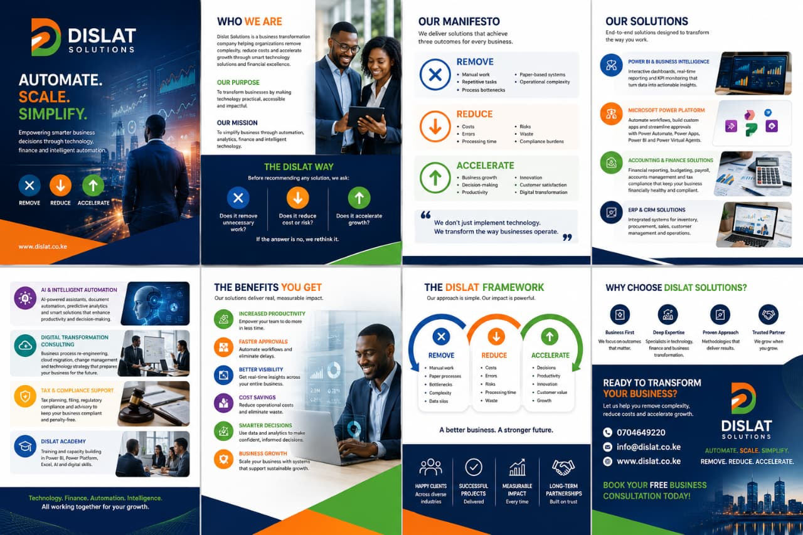

Compliance review
Check processes, records, filings, and reporting gaps that create avoidable risk.
Reduce risk
Finance, tax, and process advisory support that helps businesses standardize controls, reduce exposure, and keep operating decisions grounded in clean information.

What is included
Check processes, records, filings, and reporting gaps that create avoidable risk.
Define approval, review, documentation, and accountability practices.
Translate finance and compliance requirements into repeatable business routines.
Use cases
Implementation
Review current records, controls, risks, and reporting routines.
Identify the highest-impact compliance and control gaps.
Create practical policies, checklists, and review routines.
Help the team adopt and maintain the improved process.